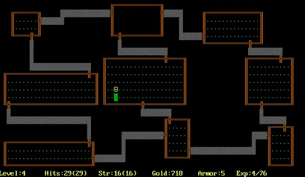

M1: 迷宫游戏 (labyrinth)
计算机世界有趣的地方在于，你可以动手构建任何你认为应该可以实现的东西。我们的热身实验是一个很像 “Online Judge” 中做过的题目，只不过是一个真正有意义的 “实用工具”：一个命令行迷宫游戏，帮助你熟悉基本的命令行参数解析和 UNIX 命令行工具的 “基本约定”。
git pull origin M1 下载框架代码。
正如课堂上所说，主动 “参考” 他人的代码、使用他人测试用例都是不严格要求自己的行为。为了使你变得更强，遵守学术诚信可以使你获得真正的训练。坚信计算机世界里没有玄学，无论是 C 代码、汇编代码还是处理器，都可以看作是严格的数学对象，可以使你在遇到问题时少一些焦躁，冷静下来分析下一步应该做什么。为了确保你对操作系统有真实的了解，
请输入 Token 登录。
1. 背景
Rogue-like 游戏可以追溯到 1980 年的《Rogue》，这是一款在 UNIX 系统上运行的文字冒险游戏。在那个图形界面还未普及的年代，程序员们用 ASCII 字符创造了一个充满想象力的世界：

既然是 “文字冒险”，就少不了最基本的命令行命令。在 UNIX 系统中，命令行终端 (Terminal) 是用户与系统交互的基本界面。当你打开终端时，系统会启动一个 Shell 程序来解析和执行平时我们熟悉的命令，如 ls、cd、pwd 等，例如：
cowsay -f dragon "Hello OS!"
会把
argv = {"cowsay", "-f", "dragon", "Hello OS!", NULL}
传递给 cowsay 程序的 main 函数，程序解析参数并在终端 (模拟器) 上画出下面的 ASCII Art：

在这个实验里，我们将构建一个命令行版本的 “游戏后端”，用于支持一个多人对战的 Rogue-like 游戏，并且熟悉命令行工具的命令行解析。这是一个程序本身无状态的后端服务，每运行一次程序就对应了一次用户操作，执行完就会退出，而所有的游戏状态都保存在文件中。这种设计让游戏系统非常灵活——通过实现游戏 “前端”，玩家可以在同一台机器上进行多人游戏，甚至扩展成网络对战模式。
(这个实验融合了 o3-mini 和 jyy 的设计。AI 开始走上历史的舞台，并终有一天会成为主角！)
 (Cursor Tab 真懂我 😂)
(Cursor Tab 真懂我 😂)
2. 实验描述
你需要实现一个命令行工具 labyrinth，它可以从文件加载迷宫地图，显示玩家位置，并支持玩家在迷宫中移动。除了基本功能外，你还需要实现命令行参数解析、错误处理以及连通性检查等功能。
你可以了解一下 Linux 系统中常见的命令行工具是如何工作的。它们通常支持各种命令行选项，并且有良好的错误处理机制。在这个实验中，我们的 labyrinth 工具需要支持以下功能：
2.1 总览
labyrinth [-m|--map FILE] [-p|--player ID] [--move DIRECTION] [--version]2.2 描述
从文件加载迷宫地图，显示和移动指定的玩家。
--map或-m: 指定地图文件路径。--player或-p: 指定玩家 ID (0-9)。--move: 指定移动方向 (up, down, left, right)。--version: 显示版本信息。
这些参数可以组合使用。
2.3 解释
上述实验要求描述是参照 man page 的格式写出的，其中有很多 UNIX 命令行工具遵守的共同约定 (UNIX 的资深用户对此了如指掌；但对给初学者，尤其是从出生以来就生活在 GUI 环境中而不是遇事就读手册的大家造成了很大的困扰)，例如 POSIX 对命令行参数有一定的约定。
以下对 labyrinth 的一些具体解释：
- 中括号扩起的参数是可选参数。因此
-m,-p,--move,--version都是可选的参数。 - 同一个选项可以有别名。在
labyrinth中，-m和--map的含义是一样的，-p和--player的含义是一样的。
main 函数的返回值代表了命令执行的状态，其中 EXIT_SUCCESS 表示命令执行成功，EXIT_FAILURE 表示执行失败。对于 POSIX 来说，0 代表成功，非 0 代表失败。和以前的 Online Judge 编程不同，实际的系统必须在输入不符合规约时及时处理。
3. 正确性标准
3.1 地图文件规范
地图文件 (map.txt) 的格式如下：
- 若干行，每行包含相同数量的字符，代表迷宫地图
- 字符含义：
#：墙壁.：空地0-9：玩家 (数字代表玩家ID)
- 迷宫不超过 100 行、100 列
- 迷宫中所有空地必须是连通的，即从任意一个空地可以到达任意其他空地 (玩家视为空地)
3.2 基本命令
labyrinth --map map.txt --player id
labyrinth -m map.txt -p id
- 功能：解析地图，并打印 map.txt 中的内容 (原样打印)
- 参数：
--map或-m：指定地图文件路径--player或-p：指定玩家ID（0-9）-m和-p可以互换位置
- 错误处理：
- 如果地图文件不存在或格式不正确，退出并返回错误码 1
- 如果玩家 ID 无效 (不在 0-9 范围内)，退出并返回错误码 1
- 如果缺少任何必需参数，退出并返回错误码 1
- 如果迷宫中的所有空地不连通，退出并返回错误码 1
- 如果迷宫过大，退出并返回错误码 1
3.3 移动命令
labyrinth --map map.txt --player id --move direction
labyrinth -m map.txt -p id --move direction
- 功能：移动指定玩家
- 参数：
--move：移动方向，可选值为up、down、left、right
- 行为规则：
- 只能移动到空地 (不能是墙壁或其他玩家所在位置)
- 如果移动成功，退出并返回错误码 0
- 果地图中没有该玩家记录，则将玩家放置在第一个空地（从上到下，从左到右查找第一个空地）
- 错误处理：
- 如果移动失败 (目标位置是墙壁或其他玩家)，退出并返回错误码 1
3.4 版本信息命令
labyrinth --version
- 功能：显示版本信息
- 输出：必须包含 “Labyrinth Game”，其他信息可自定义
- 行为规则：
- 如果命令行参数只有
--version，显示版本信息并返回错误码 0
- 如果命令行参数只有
- 错误处理：
- 如果同时包含
--version和其他参数，返回错误码 1
- 如果同时包含
4. 游戏前端
为了让游戏更有趣，我们还为 labyrinth 提供了两种不同的前端实现方式，让玩家可以更直观地体验游戏：
- 🎮 本地双人对战：两名玩家使用不同的按键 (WASD/HJKL) 在同一个终端窗口中控制各自的角色。前端程序会自动调用
labyrinth命令行工具来更新游戏状态，并在每次移动后刷新屏幕显示最新的迷宫状态。 - 🌐 网络多人对战：在这种模式下，服务器会为每个 ssh 连接的玩家自动分配 ID，每个玩家可以看到所有其他玩家在迷宫中的位置。服务器会序列化和处理所有玩家的移动请求，确保游戏状态的一致性。
前后端分离的架构设计是现代软件开发中常用的一种模式：后端核心游戏逻辑和状态管理。它提供标准化的命令行接口，处理地图加载、玩家移动验证、游戏状态更新等核心功能，而不关心游戏如何展示给用户。前端则包括本地双人和网络多人界面，负责用户交互和游戏展示。它调用后端命令处理游戏逻辑，将游戏状态以直观方式呈现给玩家，并处理用户输入转换为对后端的调用。
前后端架构带来了关注点分离，后端专注于逻辑的正确性，前端专注于用户体验；其次是灵活性，可以轻松开发不同的前端界面而无需修改核心逻辑；最后是可测试性，可以独立测试后端逻辑，确保其正确性。
5. 提示
本实验没有什么难度，就是为了让大家体验命令行参数的解析。我们可以使用 getopt_long() 函数处理长短选项，该函数在
我们给同学们提供了非常好用的 testkit。请珍惜这个功能，并在未来编程时保持良好的测试习惯。当然，我们的 testkit 是为同学们准备的，功能并不完善 (例如不同场景下的测试开关)，在实际工程项目中，请选择成熟的测试框架 😄